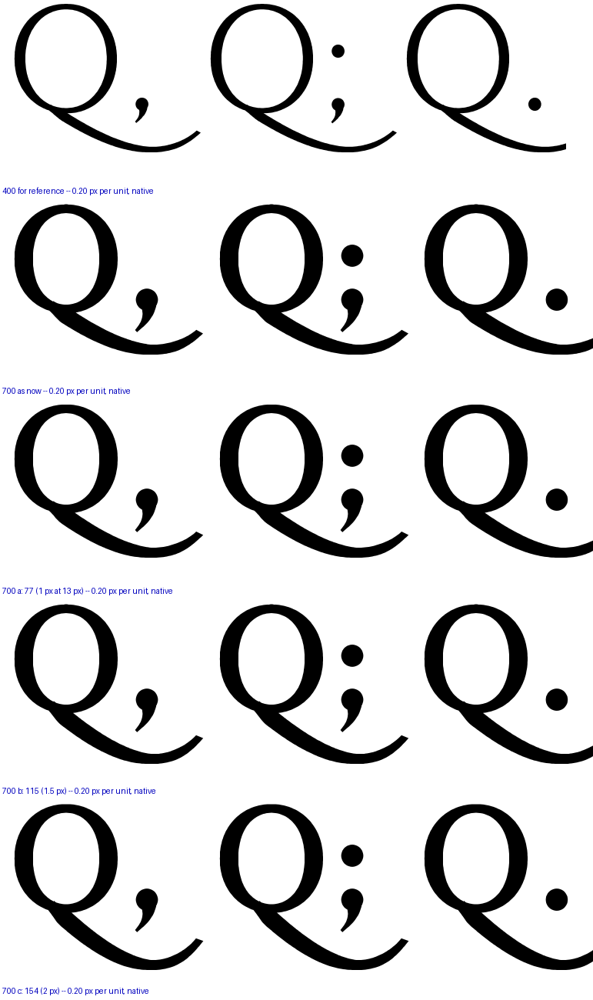
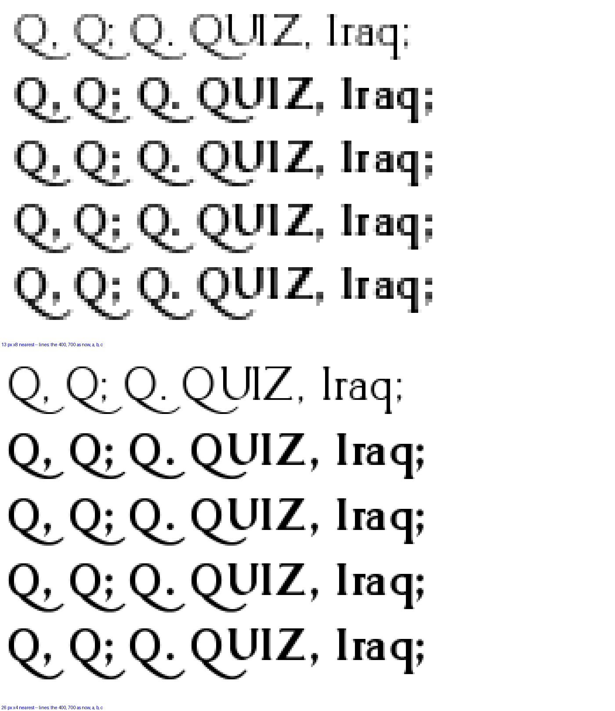
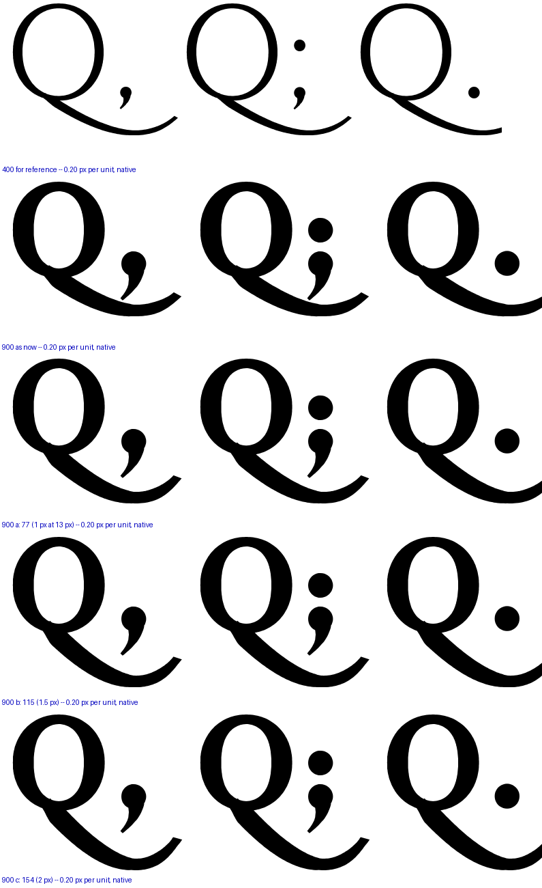
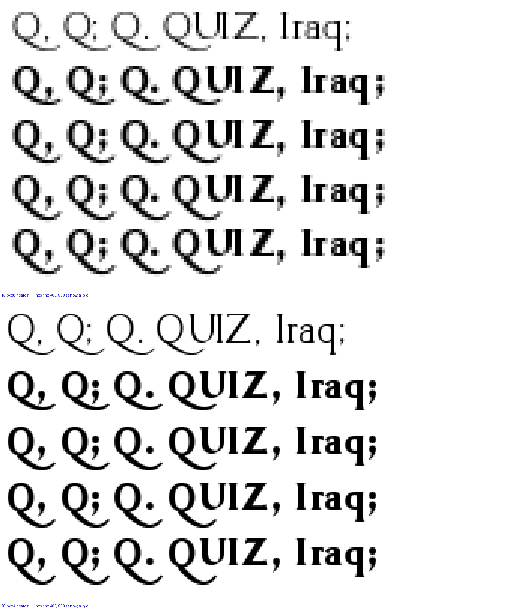

Ruling: the , ; . sit on the baseline right after the bowl and the tail sweeps below them. Measured on the built fonts, the tail already does — but the comma descends with the weight and the tail thickens, so the white between the comma’s lowest point and the tail’s upper edge is 136 units at the 400, 59 at the 700 and 10 at the 900. At 13 px on the reader a pixel is 77 units: the 400 keeps two rows of white, the 700 and 900 merge into one blob. Three clearances, each solved per weight by deepening the tail about the baseline (it leaves the ring where it did and reaches the same x); the 400 and 200 are untouched. One number applies to both heavy weights.
| arm | clearance | at 13 px | 700 tail bottom | 900 tail bottom |
|---|---|---|---|---|
| as now | 59 / 10 | 0.8 / 0.1 px | −284 | −294 |
| a | 77 | 1 px | −303 | −366 |
| b | 115 | 1.5 px | −344 | −407 |
| c | 154 | 2 px | −385 | −449 |
| the 400 | 136 | 1.8 px | −271 |
The descender line is −300; the p and g reach −281. Every arm past a runs the Black’s tail below the descender line, into the leading.



